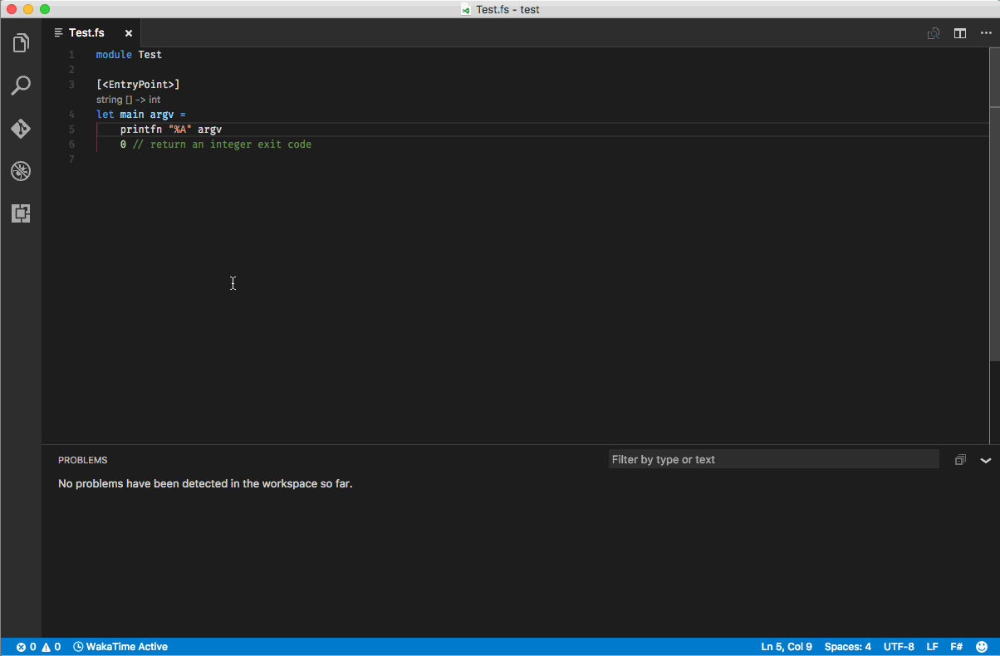

Ionide
Ionide is an organization which builds high quality, cross platform developer tools for F#. Our flagship project is Ionide-VSCode - a Visual Studio Code plugin, with more than 1 million downloads, transforming VSCode into a fully-fledged F# IDE. But Ionide is more than just an editor plugin - we build a whole ecosystem of developer tools - from a documentation generator, to an F# LSP server, to experimental and innovative projects like F# Analyzers.
Our goals and motivations
We build cross platform, F# developer tooling
- Provide cross platform, open source developer tooling for F#
- Provide a high quality IDE experience
- Innovate in the area of development tooling for F# / FP languages
- Provide a set of opinionated tools that work well together
- Focus on UX, everything should Just Work™
- Contribute to the general F# OSS ecosystem
Toolchain
---
title: Ionide/FsAutoComplete toolchain
---
erDiagram
Ionide-ProjInfo ||--|| MsBuild : "To get information out of msbuild"
FsAutocomplete ||--|| Ionide-ProjInfo : "To get information for the F# Compiler"
FsAutocomplete ||--|| Ionide-LanguageServerProtocol : "To communicate with an LSPClient"
FsAutocomplete ||--|| "Ionide-FSharp.Analyzers.SDK" : "To run analyzers"
FsAutocomplete ||--|| "FSharp.Compiler.Service" : "To get type information, errors, warnings, etc."
FsAutocomplete ||--|| Fantomas : "To format code."
FsAutocomplete ||--|| FsharpLint : "To lint code."
"ionide-vscode-fsharp" ||--|| FsAutocomplete : "Uses LSP to communicate to"
"ionide-vscode-fsharp" ||--|| "Ionide-fsgrammar" : "To colorize"
"ionide-vscode-fsharp" ||--|| ionide-vscode-helpers : "Helpers to interact with vscode"
VSCode ||--|| "ionide-vscode-fsharp" : "Uses"
"emacs-fsharp-mode" ||--|| FsAutocomplete : "Uses LSP to communicate to"
"ionide-vim" ||--|| FsAutocomplete : "Uses LSP to communicate to"
"additional LSP Clients" ||--|| FsAutocomplete : "Uses LSP to communicate to"